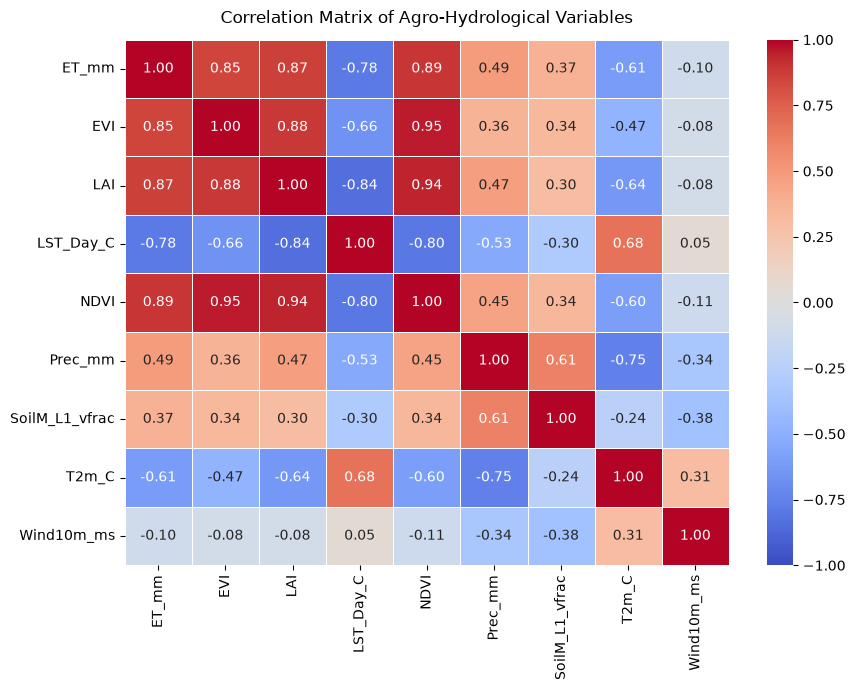
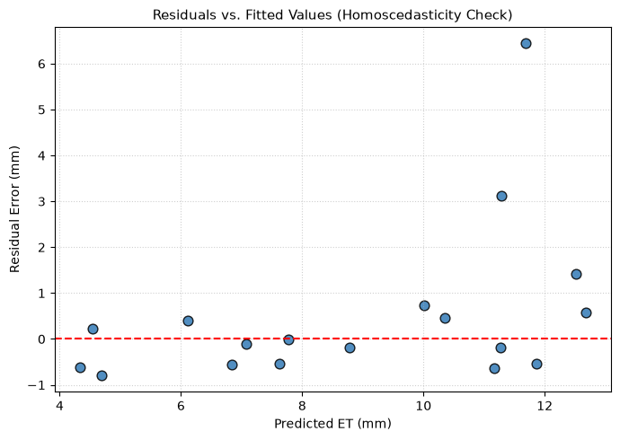
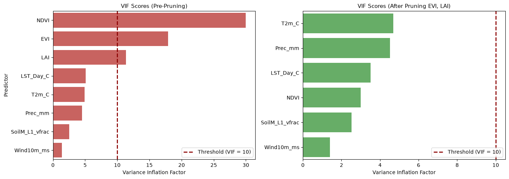
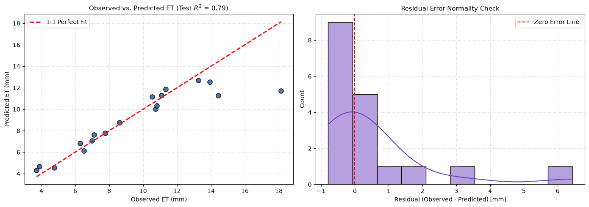

- Student
- Sohail Zulfiqar
- Registration ID
- 578135
- Program
- MS GIS & RS, 2025
- Instructor
- Dr Hammad Gilani
- Observations
- 878 candidate predictors
- Predictors kept
- 6EVI and LAI pruned, max VIF 4.7
- Test R²
- 0.785RMSE 1.78 mm, 18 rows
- 5-fold CV R²
- 0.724mean, ±0.087
Objective and data
Predict surface evapotranspiration, ET_mm, across the Islamabad Capital Territory from
satellite-derived vegetation indices and climate variables, using multiple linear regression. The dataset
has 87 observations and eight candidate predictors.
| Variable | Role | Meaning |
|---|---|---|
ET_mm | Target | Evapotranspiration, mm |
NDVI | Predictor | Normalized Difference Vegetation Index |
EVI | Predictor | Enhanced Vegetation Index (pruned for collinearity) |
LAI | Predictor | Leaf Area Index |
LST_Day_C | Predictor | Daytime land surface temperature, °C |
T2m_C | Predictor | Air temperature at 2 m, °C |
Prec_mm | Predictor | Precipitation, mm |
SoilM_L1_vfrac | Predictor | Soil moisture, layer 1, volume fraction |
Wind10m_ms | Predictor | Wind speed at 10 m, m/s |
Method
The steps of the notebook, in order.
- Completeness audit. All 87 rows are complete: no nulls and no sentinel values.
- Outliers. IQR fences (1.5 × IQR) flag values in five predictors: LAI 10, wind 5, daytime LST 2, precipitation 1 and 2 m temperature 1. They are capped at the fence rather than dropped, so all 87 rows are kept.
- Correlation and VIF. NDVI, EVI and LAI are strongly correlated (EVI–NDVI r = 0.95). EVI (VIF 17.9) is removed first, because NDVI correlates more strongly with ET (0.89 against 0.85). NDVI then falls from 30.0 to 9.2, but LAI stays at 11.1, so a loop removes it too. All six remaining predictors are below 5.
- Split and scaling. An 80/20 split (69 training rows, 18 test rows, seed 42). Predictors are z-score scaled with a scaler fitted on the training rows only.
- Fit and evaluate. Ordinary least squares, scored on both partitions and with 5-fold shuffled cross-validation.
- Inference. The same model refitted with statsmodels on the 69 training rows for coefficients, p-values and residual diagnostics.
Results
Train and test scores
| Partition | MAE | MSE | RMSE | R² | Adj. R² | MAPE % |
|---|---|---|---|---|---|---|
| Training (69 rows) | 1.0055 | 2.2437 | 1.4979 | 0.8147 | 0.7968 | 10.98 |
| Testing (18 rows) | 0.9730 | 3.1604 | 1.7778 | 0.7853 | 0.6682 | 9.05 |
5-fold cross-validation
| Fold | R² | RMSE (mm) |
|---|---|---|
| Fold 1 | 0.7853 | 1.7778 |
| Fold 2 | 0.5992 | 1.9265 |
| Fold 3 | 0.7009 | 1.9470 |
| Fold 4 | 0.8528 | 1.5144 |
| Fold 5 | 0.6833 | 1.6812 |
| Mean (± std) | 0.7243 (±0.0873) | 1.7694 (±0.1607) |
Fitted equation and predictors
ET_mm = 12.6693 - 0.1104(LST_Day_C) + 16.7041(NDVI) - 0.0012(Prec_mm)
+ 14.3144(SoilM_L1_vfrac) - 0.9457(T2m_C) + 6.7737(Wind10m_ms)
| Predictor | Coefficient | Standardized β | p-value | VIF |
|---|---|---|---|---|
| NDVI | 16.7041 | 2.4311 | < 0.001 | 2.99 |
| SoilM_L1_vfrac | 14.3144 | 0.6694 | 0.032 | 2.52 |
| T2m_C | -0.9457 | -0.6038 | 0.151 | 4.69 |
| Wind10m_ms | 6.7737 | 0.2131 | 0.332 | 1.40 |
| Prec_mm | -0.0012 | -0.1811 | 0.654 | 4.52 |
| LST_Day_C | -0.1104 | -0.1593 | 0.690 | 3.50 |
Figures
Outputs of the notebook, not redrawn.




Reading the diagnostics
- Collinearity is resolved. After pruning EVI and then LAI, every VIF is below 5 (largest: 2 m temperature at 4.69; NDVI at 2.99). Only NDVI and soil moisture are significant at the 5% level; the other four coefficients cannot be told apart from zero.
- Residuals are not normal. In the statsmodels fit on the training rows, the Jarque–Bera test gives p = 0.0035 and the omnibus test p = 0.023. The Durbin–Watson statistic is 2.10, so there is no sign of autocorrelation, and the condition number is 5.7. Equal variance was judged from the residual plot only; no formal test was run.
- Small test set. The 18 test rows give R² 0.785, but the five folds range from 0.60 to 0.85. Fold 1 reproduces the test-set scores exactly (0.7853 and 1.7778 mm), so the CV mean is the steadier figure.
Run the notebook
Three ways to work with it.
Run it in Colab
Google Colab already has pandas, scikit-learn and Matplotlib. Upload Islamabad_Data.csv to the session first, since the notebook reads it from its working folder.
Run it locally
Clone the repository, then from the Assignment 1 folder:
pip install notebook pandas scikit-learn matplotlib seaborn statsmodels tabulate jupyter notebook